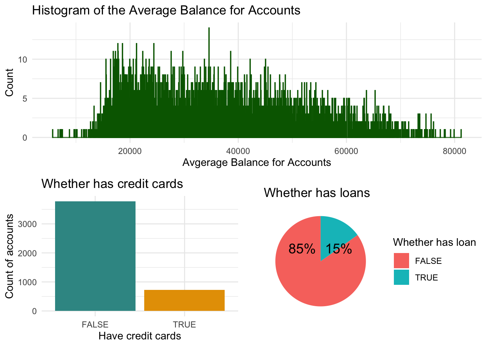
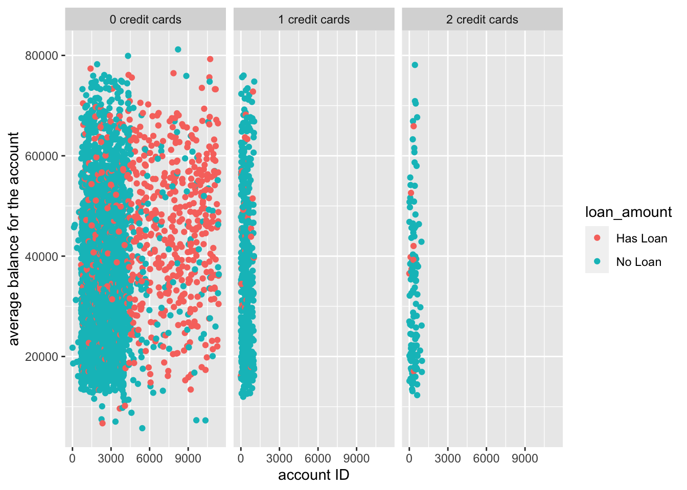
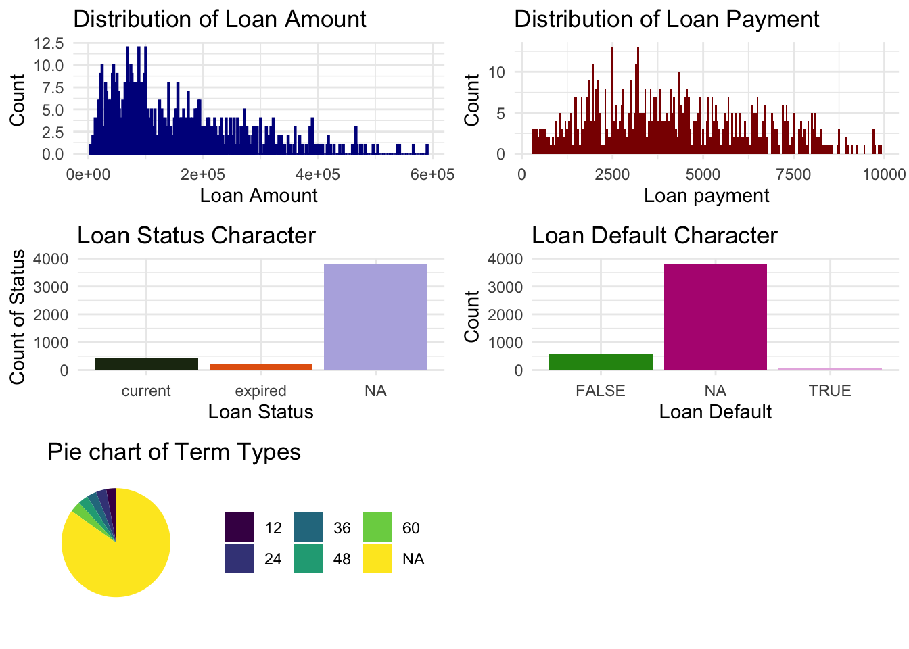
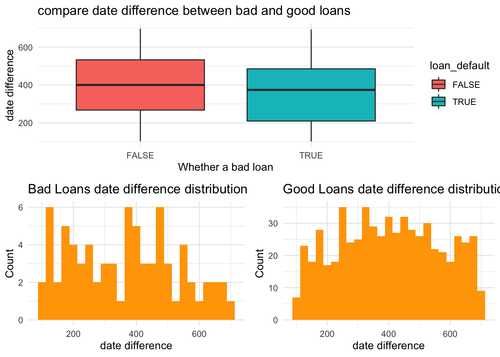
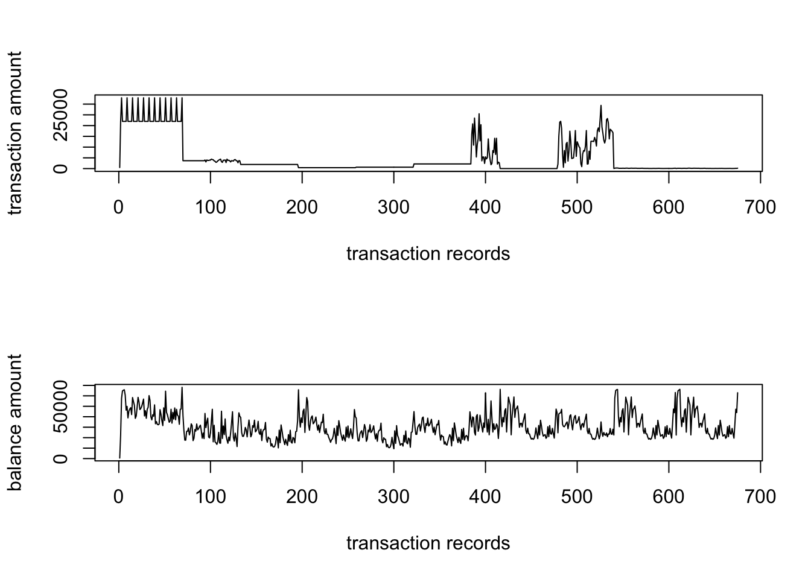

Exploration ： 


According to these visualization plots, the distribution of all loan amount is right skewed.
The loan payment is also right skewed.The characteristic is that: both loan amount and loan payment amount are more likely to be relatively smaller number. This is reasonable due to the risk control of banks.
For other characteristics, relatively more accounts have current loan instrad of expried loan. Besides, more accounts with loan are not in default, which means most of them are good loans. For loan terms, among the accounts with records, surprisingly, the differendt loan terms have almost equally proportions.

Bad loans are likely to have smaller value od date difference between open account and create loan.
According to the comparison, good loans have higher frequency of longer date difference than bad loans. This means, if the the date difference between account open and loan created is small, then it may have higher risk of being bad loan.
